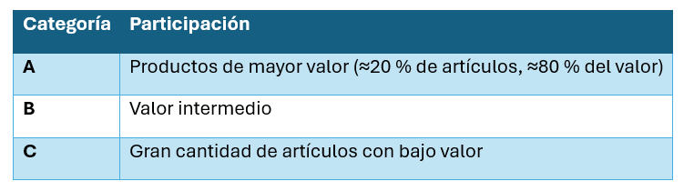

Unidad II · Tema 2.5
Administración de inventarios (método ABC)
Un inventario representa el conjunto de materiales o productos almacenados para satisfacer la demanda futura. Su correcta administración evita tanto el desabasto como el exceso de existencias.
Método de clasificación ABC
Método de gestión de inventarios que divide los productos de un almacén en tres categorías (A, B y C). Su base se establece en el principio de Pareto (80/20).
| Categoría | Participación |
|---|---|
| A | Productos de mayor valor (≈20 % de artículos, ≈80 % del valor total inmovilizado) |
| B | Valor intermedio (control moderado de existencias) |
| C | Gran cantidad de artículos con bajo valor unitario |

Ejemplo textil
Categoría A
- Colorantes especiales.
- Telas importadas.
Categoría B
- Botones.
- Cierres.
Categoría C
- Bolsas.
- Etiquetas.
- Material de oficina.
Comprueba tu comprensión
¿Por qué los artículos de categoría A (como colorantes especiales o telas finas) requieren conteos cíclicos continuos a diferencia de los de categoría C?
Caso de estudio: Empresa "Moda ESIT"